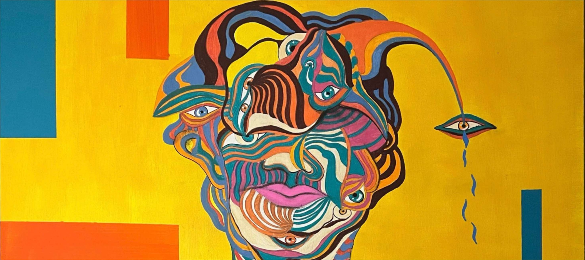
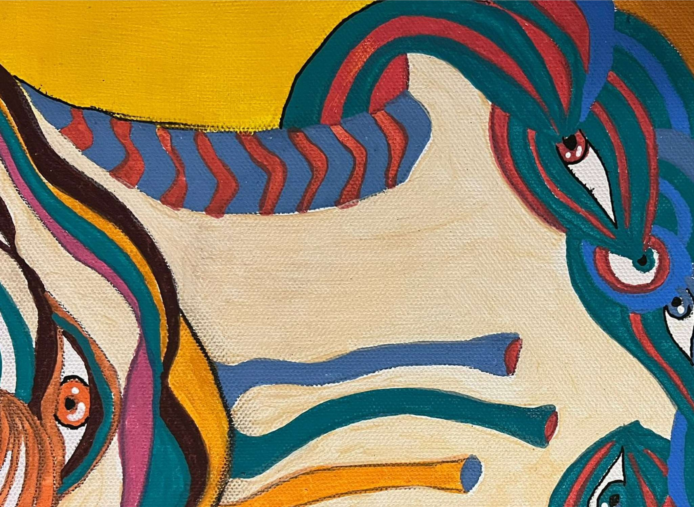
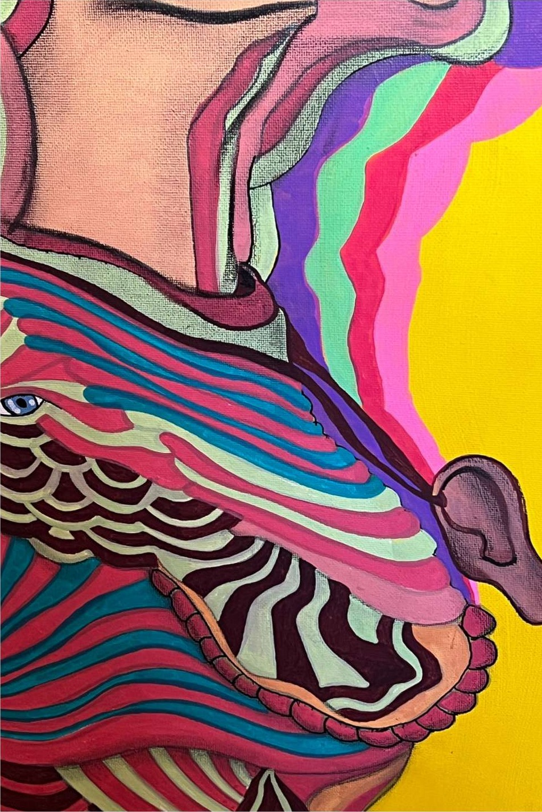
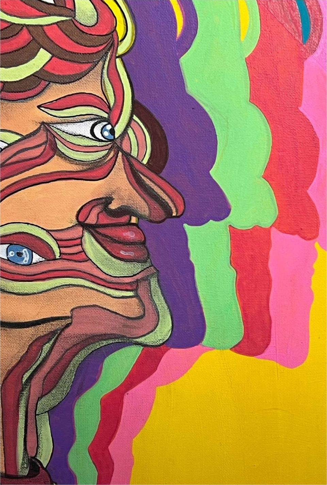
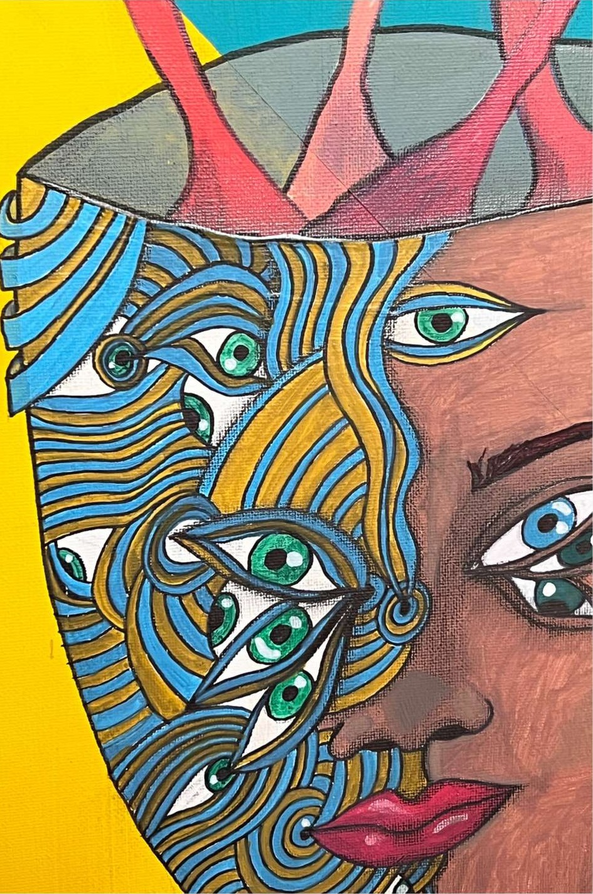
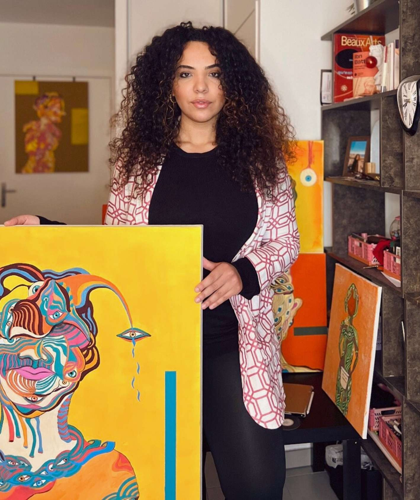
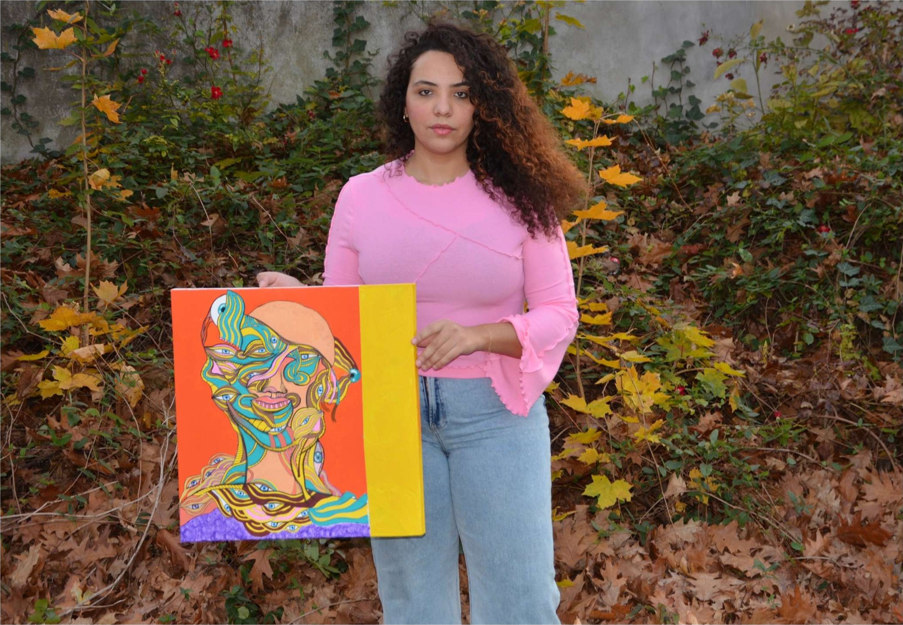

Le Laboratoire
Dix-huit scènes, dix-huit mécaniques de défilement — chacune dérivée d’une toile : ses couleurs, ses gestes, ses obsessions. Faites défiler, puis choisissez celles qui vivront sur le site final.
Page d’essai interne · le fond de page se teinte au passage de chaque œuvre (mécanique A00 « Le Caméléon »)
Anxio-Dépressif
2023 · Acrylique sur toile · 80 × 80 cm
Le tumulte intérieur porte des rayures — et chaque rayure regarde.
Mécanique : la toile s’assemble en six lattes verticales qui glissent en alternance, écho des barres géométriques du fond ; deux barres flottent en parallaxe.

Ménopause
2024 · Acrylique sur toile · 80 × 80 cm
Une femme et ses échos : rose, violet, vert — tous convergent vers elle.
Mécanique : trois fantômes colorés de la toile (comme les silhouettes en écho du tableau) arrivent décalés puis se résorbent dans l’image nette.
Apple Juice
2024 · Acrylique sur toile · 80 × 60 cm
La lame n’entre pas : elle révèle ce qui grouille sous la peau calme.
Mécanique : l’image arrive fendue en deux le long de la ligne du couteau ; les moitiés se ressoudent et une lame de lumière balaie la coupure.
The Link — Le Lien
2024 · Techniques mixtes sur papier coloré · 70 × 50 cm · polyptique 2/6
Ouvrir le crâne comme un couvercle, laisser les fils relier les mondes.

Mécanique : la toile bascule depuis sa tranche haute comme le crâne-couvercle du tableau (perspective 3D), pendant qu’un fil violet se trace sous le titre.

Visages sur fond rouge
2025 · Acrylique sur toile · dimension sur demande
Rouge total : les visages remontent à la surface comme des braises.
Mécanique : la page entière s’inonde du rouge de la toile (fond caméléon poussé à fond), puis le rideau rouge se retire de l’image au rythme du défilement.
Le Complexe
2023 · Acrylique sur toile · 50 × 50 cm
Un nœud de pensées tressées qui n’a jamais appris à se défaire.
Mécanique : six bandes horizontales se tissent en alternance gauche/droite, comme les mèches nouées de la figure.

Le Clown
2023 · Acrylique sur toile · 50 × 50 cm
Le sourire est un déguisement qui glisse.
Mécanique : la toile tombe sur son clou et se balance comme un pendule de cirque, avant de s’immobiliser volontairement de travers.

Prémonition
2023 · Acrylique sur toile · 50 × 50 cm
Deux profils se devinent avant de se connaître ; l’œil attend, suspendu.
Mécanique : l’image sèche comme une tache d’encre — floue et délavée, puis nette. Le titre apparaît lettre à lettre ; un œil-pendule descend le long de la scène.

Esprit, Ouvre Toi
2023 · Acrylique sur toile · 50 × 50 cm
Les pensées s’échappent en rubans — laisse-les couler.
Mécanique : la toile se dévoile de gauche à droite pendant que trois rubans — sang, bleu, sable, prélevés dans la chevelure — filent devant elle.

Sans Titre
2023 · Acrylique sur toile · 60 × 40 cm
Un visage en flammes calmes, rayé de vent.
Mécanique : le bord de révélation est une ligne de flammes — un masque en zigzag monte du bas de la toile ; les lettres du titre s’étirent vers le haut comme des flammèches.
Sans Titres — la série
2024 · Acrylique sur toile · 3 × (30 × 30 cm)
Trois petites toiles, trois battements du même regard.


Mécanique : accrochage de galerie — chaque toile tombe sur le mur l’une après l’autre, puis dérive à sa propre vitesse de parallaxe. Survolez-les.

Pièce en damier
2025 · Acrylique sur toile · dimension sur demande
Le monde à l’envers tient debout sur un damier.
Mécanique : la toile arrive tête en bas — comme son personnage — et le défilement la remet à l’endroit ; des globes oculaires flottent en parallaxe et un damier se dissout en haut de scène.

Yeux suspendus
2025 · Acrylique sur toile · dimension sur demande
Des ballons d’yeux au bout de leurs ficelles jaunes.
Mécanique : la toile pend à un fil jaune — celui qui sort de l’œil du portrait — et oscille doucement ; chaque lettre du titre se suspend à son tour.

Visage branché
2025 · Acrylique sur toile · dimension sur demande
Branché sur le mur, l’esprit fait des bulles.
Mécanique : comme la bouche-spirale du portrait, la toile arrive en tourbillon ; des cercles concentriques pulsent derrière elle et les lettres éclatent comme des bulles pop.

Œil bleu — détail
2025 · Acrylique sur toile (détail)
Mécanique : la toile est vue à travers une pupille qui se dilate au fil du défilement, pendant que la légende orbite autour d’elle comme un satellite.
Série digitale — travelling
2024 · Art digital · 8 vignettes · le défilement vertical devient un travelling horizontal, et chaque vignette porte sa micro-animation (F01–F08)







Au ras de la toile

L’atelier, et après
Les toiles quittent l’atelier : elles s’exposent, s’enfilent, voyagent dans la médina.
Mécanique : ken burns lent sur le portrait (l’image respire sans défilement), zoom-inclinaison au survol des vies de l’œuvre.



L’index des mécaniques
Pour choisir : chaque carte renvoie à sa scène. On peut retenir une mécanique par œuvre, une seule pour tout le site, ou un petit vocabulaire de 3–4 gestes réutilisés.
Le fond de page se teinte de la couleur ambiante de chaque œuvre traversée — c’est la transition « entre » les images.
A01Les lattesAnxio-DépressifL’image s’assemble en 6 lattes verticales alternées + barres en parallaxe.
A02Les échosMénopauseTrois fantômes colorés convergent et se résorbent dans l’image.
A03L’entailleApple JuiceImage fendue en deux qui se ressoude ; une lame de lumière balaie la coupure.
A04Le couvercleThe LinkBascule 3D depuis la tranche haute + fil qui se dessine.
A05La marée rougeVisages fond rougeLa page s’inonde de rouge ; le rideau se retire au rythme du scroll.
A06Le tissageLe ComplexeSix bandes horizontales se tissent en alternance.
A07Le balancierLe ClownLa toile tombe sur son clou et se balance avant de rester de travers.
A08L’aquarellePrémonitionFlou délavé qui sèche en image nette + titre lettre à lettre + œil-pendule.
A09L’ondeEsprit, Ouvre ToiRévélation latérale + trois rubans qui filent devant la toile.
A10La flammeSans Titre 60×40Masque en zigzag qui monte ; lettres-flammèches.
A11L’accrochageSans Titres (série)Trois toiles s’accrochent en cascade, parallaxe individuelle, survol.
A12Le renversementPièce en damierArrive tête en bas, le scroll la remet à l’endroit ; globes en parallaxe.
A13La suspensionYeux suspendusLa toile pend à son fil jaune et oscille ; lettres suspendues.
A14La spiraleVisage branchéEntrée en tourbillon + cercles concentriques + lettres pop.
A15L’irisŒil bleu (détail)Pupille qui se dilate au scroll + légende en orbite.
A16La pelliculeSérie digitale 01–08Scroll vertical détourné en travelling horizontal ; 8 micro-anims F01–F08 (glitch, ballon, orbite, stores, loupe, nuages, dactylo, chaînes).
A17La matièredétails macroPlein écran noir ; les gros plans se fondent l’un dans l’autre au scroll.
A18La codaatelier & médinaKen burns lent + vignettes « vies de l’œuvre » au survol.